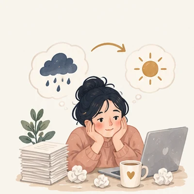
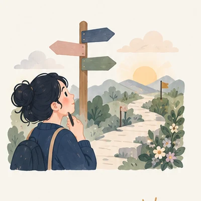
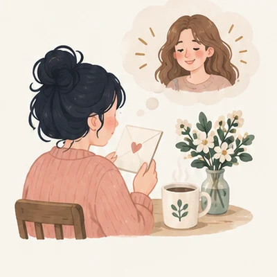
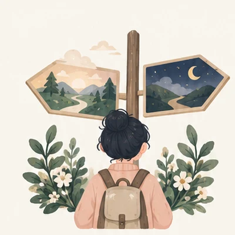
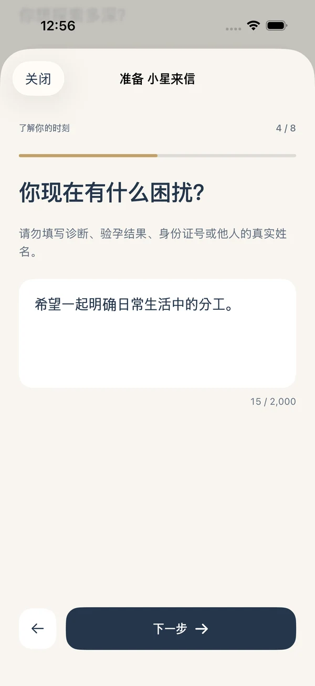
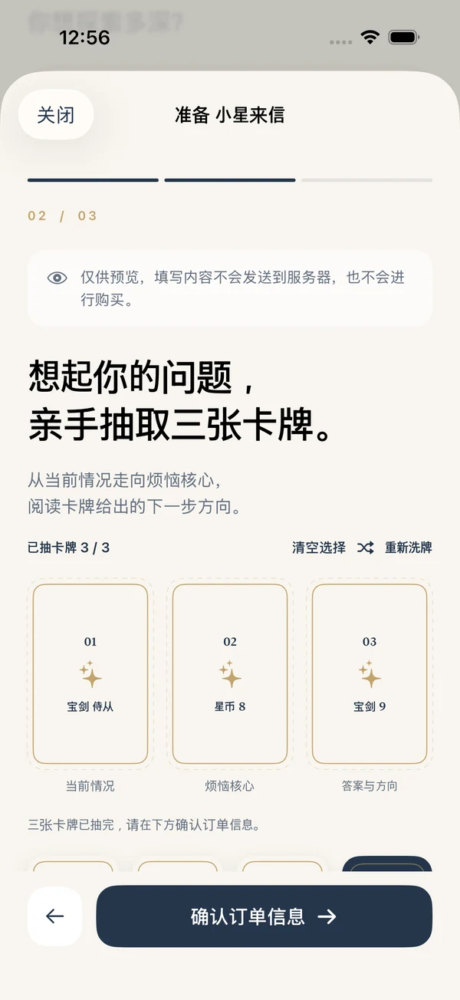
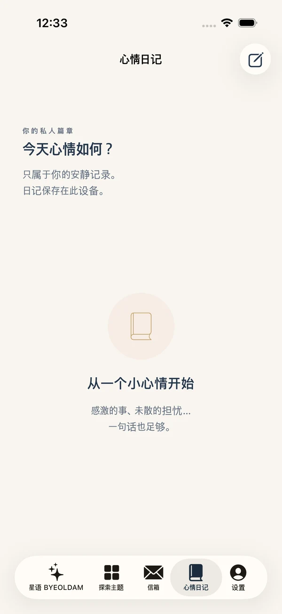
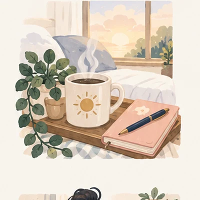

01 / LOVE
想再次心动的我
开始新关系前，先理解自己的心。
还没说出口的心情，也没有关系。
你选择的三张牌，和心中的一个问题，
将成为温柔而清晰的专属故事。
正在等待App Store审核 · 获批后上线
“那么，我接下来可以怎么做？”
结合卡牌象征和你的处境，先读到建议，
再理解原因、选择的标准，以及现在能做的一小步。
人生的岔路口，或日常的小困扰。
在14个类别、70个主题中，
找到贴近当下的故事。
开始新关系前，先理解自己的心。

为工作中疲惫的自己寻找恢复线索。

离开还是留下，寻找自己的标准。

伸出手之前，先整理心情。
给自己一点被理解的时间。

看看下一次选择中真正重要的事。
本服务不预测健康状况、怀孕结果或投资收益。
洗牌时，想一想心中的问题。
亲手选择三张牌，依次看看当前处境、
困扰的核心，以及答案与方向。
点击卡牌，感受BYEOLDAM的氛围。
依次点击三张牌，翻开看看。
不必复杂，一步一步来。
从下单到收藏PDF，流程如下。
找到当下需要的故事，每个页面回答一个问题。
让牌组洗牌，带着心中的问题亲手选择三张。
完成App内购买后打开订单邮件，在iPhone Mail中亲自点击发送。
运营者实际收到订单邮件后6小时内，制作、检查并通过邮件发送PDF。
不必猜测所有心情，先整理自己期待的关系和一件想确认的事。下一次选择，可以等这次对话之后再做。
不用在长篇文字中寻找重点。
先读到针对困扰的建议，
再理解三张牌的依据和适合自己的行动。
基于虚构情境制作的SAMPLE，实际订单结果取决于输入与卡牌。
不用一次回答所有问题。
从输入到选牌，再到记录，
让一切以你的速度进行。

返回上一页也会保留输入。

洗牌、选择，再翻开卡牌。

在心情笔记中留下今天的想法。
需要时，单篇购买。
两种解读，无需定期订阅。
温柔而清晰地看看一个困扰。
在App中选择 · 实际收到订单邮件后6小时内发送
更深入理解选择的理由与下一步。
在App中选择 · 实际收到订单邮件后6小时内发送
此处为韩国App Store价格。货币、税费因地区而异，请在购买页面确认最终金额。App计划免费下载，PDF解读需另行进行App内购买。
在心情笔记中留下想法，把邮件中的PDF
导入信箱，收藏为自己的记录。
记录阅读后的想法与随之发生的小变化。
将PDF保存到文件App，再导入对应订单。
记录保存在当前设备中。更换设备或重新安装App时不会自动恢复，请单独保留收到的邮件与PDF。

App和PDF支持韩语、英语、日语和简体中文。
请在下单前于App设置中选择语言。
目前正在等待App Store审核，尚未正式公开。计划获批后上线，可通过下方按钮查看App Store公开状态。
不会。购买后请打开订单邮件，并在iPhone Mail中亲自点击发送。邮件发送结果不等于实际受理，请确认受理回复。如果取消或发送失败，可从同一订单重发，无需再次购买。
运营者实际收到订单邮件后6小时内，制作、检查并通过邮件回复PDF。小星星来信为10页，深度星星故事为25页。使用AI辅助人工制作，不是实时咨询。
解读结合卡牌象征和输入情境，提出行动方向。不确定未来事实或他人想法，也不替代医疗、法律、投资等专业判断。
笔记、订单和导入的PDF保存在当前设备中，不支持自动同步或在其他设备自动恢复。请单独保留邮件与PDF，重新购买前可凭订单编号联系支持。
支持韩语、英语、日语和简体中文。请下单前选择语言，并在订单确认页面核对PDF语言。之后更改App语言不会改变已有订单的PDF语言。
请向支持提供订单编号、商品名和问题发生时间。Apple退款可在reportaproblem.apple.com申请，由Apple审核处理。请勿发送密码或银行卡号。
三张牌，一封给你的信。
在iPhone上遇见BYEOLDAM。
目前正在等待审核，可能暂时无法下载。计划获批后上线，服务面向年满19周岁的用户。